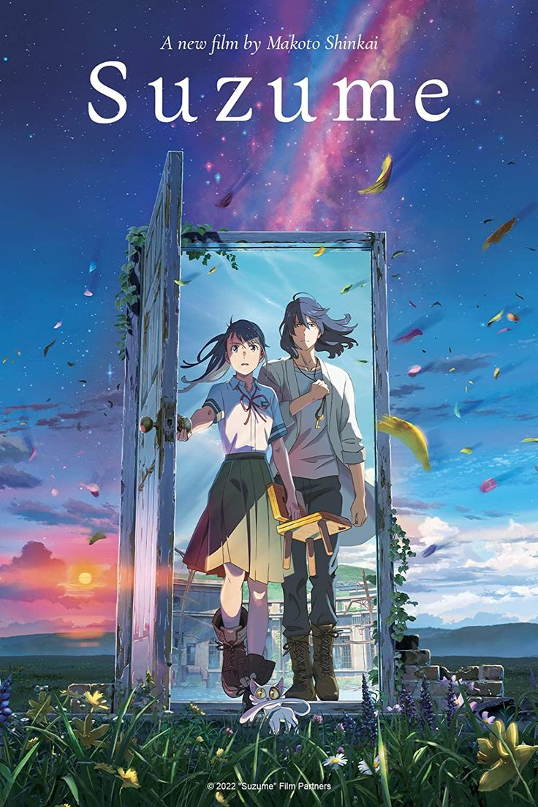

Recommended Movies

Your Name

Weathering with You

A Silent Voice

Jujutsu Kaisen 0

Spirited Away

Howl's Moving Castle

Josee, the Tiger and the Fish

Suki demo Kirai na Amanojaku

i want eat your pancreas

Suzume

Garden of Words

Natsu e no Tunnel, Sayonara no Deguchi

Violet Evergarden Gaiden: Eien to Jidou Shuki Ningyou

Detective Conan Movie 24: Hiiro no Dangan